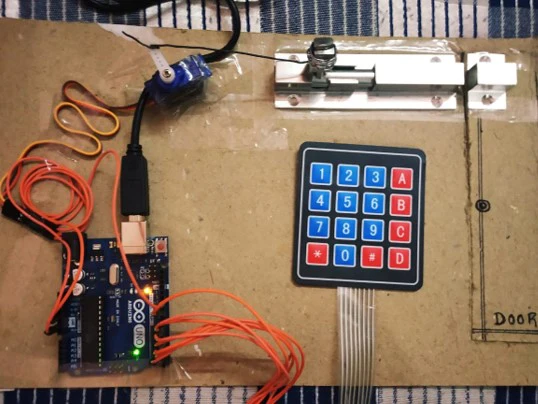

Substation Monitoring And Controlling Unit

This project involves designing a comprehensive monitoring and control system for electrical substations. The system efficiently tracks the status of various plant equipment, alerts operators of any anomalies, and manages switchgear operations.
Key Features: Real-time status monitoring, alarm systems, and digital controls for switchgear and transformers.
Technologies Used: Arduino, blyk IOT, PLC programming.
Project Duration: 4 months
My Role: Second Team Lead - Responsible for coordinating team efforts and ensuring project milestones were met. I also contributed to the system design and testing phases.
Smart Home Automation System
This project focuses on creating a smart home automation system that allows users to control home appliances via a mobile application. The system integrates IoT devices to enhance user convenience and energy management.
Key Features: Remote control of appliances, energy usage monitoring, and user-friendly mobile interface.
Technologies Used: Arduino, 4*4 Keypad Module, Servo motor.
Project Duration: 2 months